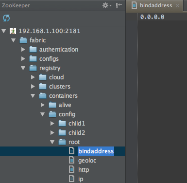
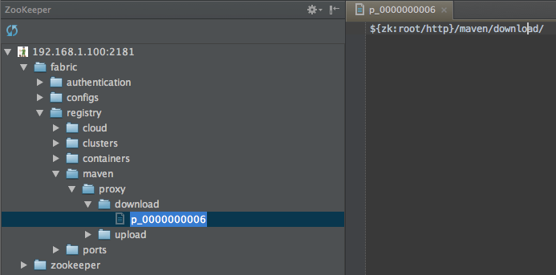
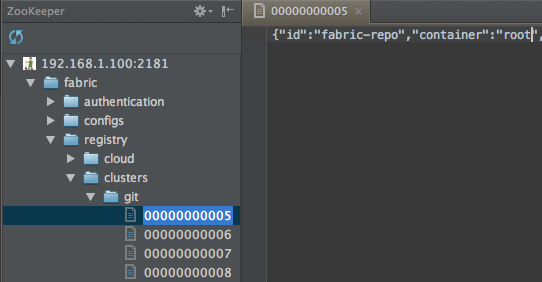
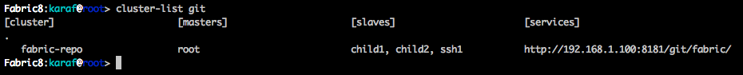

Fabric8: Deep Dive
by Ioannis Canellos / @iocanel and James Strachan / @jstrachan
Overview
From code to Fabric8
Deep Dive into the Registry
Advanced Profile Management
..more
I finished coding...
now what?
4 simple steps...
- Code the application.
- Deploy your artifacts to a repository.
-
Create a profile that defines how the artifacts should be provisioned.
- The artifacts themselves
- Their dependencies
- Assign the profile to one or more containers.
... Enjoy!!!
Wait, do I need a Maven Repository Manager?
Short answer: No!
Long answer: Your containers need visibility to the artifacts.
Shared Filesystem, A maven repository manager, etc.
Fabric8 provides a Maven Repo Manager, to save you all the trouble.
The Fabric8 Maven Proxy
- A minimal maven repository manager
- Acts as a "proxy" but also supports direct uploads
- Discoverable through the Fabric8 Runtime Registry
- Works out of the box (as part of the fabric profile).
How does it work?
- A container "needs" an artifact.
- It looks up the registry for the available proxies.
- Proxy checks its internal repo (as a repo manager).
- Looks up configured remote repos (as a proxy).
- The "latest" artifact gets downloaded.
Add this to your pom.xml ...
false
fabric
Fabric
http://hostname:8181/maven/upload
default
true
fabric-snapshots
Fabric Snapshots
http://hostname:8181/maven/upload
And then:
#mvn deployHow about an example?
What if...
the maven proxy goes down?
You can use more than one container acting as a proxy.
Each request is always sent to ALL registered proxies.
What if...
the the registry fails?
The Registry is powered by a ZooKeeper Ensemble.
The ensemble is consisted by an "odd" number of server.
As long as there is "quorum" the Ensemble will keep on running.
And I have to configure the ensemble myself?
Fabric8 can even manage the ZooKeeper Ensemble for you...
Why is managing the ensemble hard?

ZooKeeper configuration is static.
- All servers need to know each other upfront.
- You can't add / remove a server.
- You can't reconfigure a server.
-
Some tools out there may make things a bit easier:
- Apache Whirr
- Netflix Exibitor
How does Fabric8 manages the Ensemble?
- Ensemble config is reflected in Profiles.
- For any ensemble change, Fabric8 will create new "ensemble" Profiles.
- Provision a NEW ensemble.
- Migrate ALL data to the new ensemble.
- Migrate ALL containers to the new ensemble.
Everything is 100% transparent to the user.
Changing the Ensemble in Action
Registry Deep Dive
Runtime Registry
How is it structured?Just like a filesystem...
Runtime Registry
What does ZooKeeper bring into the picture?In addition to common filesystem attributes...
- A znode may contain both children and data.
- A znode may be "ephemeral".
- Sequential node.
These are really important for "Service Discovery"....
Runtime Registry
How does discovery works?- A unique path for each service type.
- A "znode" per registration under the corresponding "path".
- Registration contains the connection information.
- Registration uses "Ephemeral" znodes.
- Discovery is as simple as listing the files in a directory.
Discovery Example
Let's see how the Fabric8 Maven Proxies are discovered.
- Base Path: "/fabric/registry/maven/proxy/download"
- Maven Proxies Publish their URL under that path.
- When a "proxy" is needed it's looked up under that path.
The Fabric8 Maven Proxy Registration
Runtime Registry
How does master election works?- A unique path for each service type.
- A "znode" per registration under the corresponding "path".
- Registration contains the connection information.
- Registration uses "Ephemeral/Sequential" znodes.
- The lowest sequence number wins (First One Wins)
- All candidates request to be notified upon any change.
The master died...
All "hail" the new master...When a container dies, all its "ephemeral" entrieas are removed.
This will send a notification to all the "slaves".
Start of the relection proces.
The Git Master
The master/slave paradigm is used by the Fabric8 Git Repository...
The Git Master
Master Slave Demo
Let's force a disconnection in the current git master....
How is the registry secured?
Connection is free for all.
Clients may authenticate.
Znodes may be protected by ACLS.
Authorization
ZooKeeper nodes can be protected by ACLs.
- Create
- Delete
- Read
- Write
- Admin
The available permissions are:
Authorization Schemes
Mutliple Authorization Schemes:
- World
- Auth
- Host
- Ip
- Digest
Setting ACL to a Znode
Some examples:
- Allow the world to read /mynode
- Allow only authenticated users to write to /mynode
- Allow only that "user" to have admin access to the /mynode
How does Fabric8 manges ACLs
Using Profiles, of course !!!
Fabric8 ACL Manager
io.fabric8.zookeeper.acl
path = [acl scheme]:[pemissions]
# Add properties here
acls./ = world:anyone:acdrw
acls./fabric = world:anyone:acdrw
Advanced Profile Management
The need of abstraction
The are cases when:
- Configuration differs between containers
- Configuration values are not known upfront
- Configuration is environement specific
For Example:
- The bind address for Jetty
- The bind port of any service on Openshift
- A configuration provided by an other profile
Placeholders
Fabric using the concept of placeholders.
Examples:
- Container attribute placeholder
- Port placeholder
- ZooKeeper Entry placeholder
- Environment placeholder
Container Placeholder
Can be used when we want to refer to a container attribute...
- Bind Address ${container:bindaddress}
- Ip Address ${container:ip}
- Base HTTP URL ${container:httpurl}
Port Placeholder
It's hard to know which port will be free...
especially when you are free to create on the fly multiple containers on the same host...
- Allows allocating a port within a range ${port:9090,9191}
- Registers the allocated port
- Associates the port with the service. (for releasing ports)
Demo
Improve the simple application to use resolvers